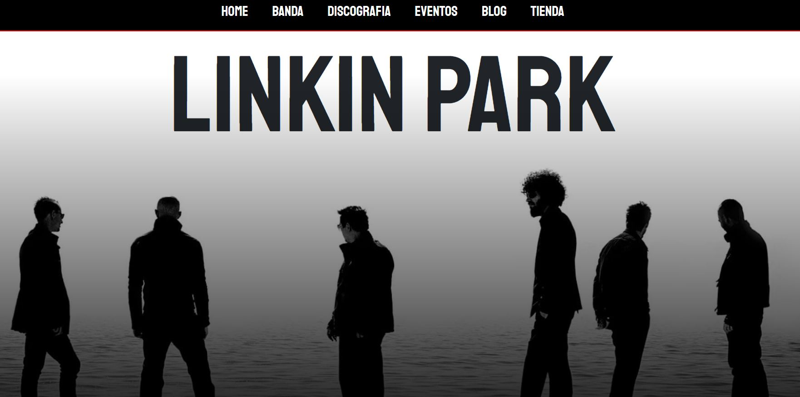

Transformo problemas de comunicación digital en sitios claros, funcionales y alineados con objetivos de negocio
Especializado en rediseño de sitios corporativos. Cada proyecto parte del análisis del problema, no de una plantilla.
Trabajos
Casos de estudio
 Rediseño · UX
Rediseño · UX
DeSaloon
Rediseño enfocado en mejorar jerarquía visual, navegación y percepción del sitio.
Arthyum
Modernización completa de e-commerce enfocada en destacar obras y mejorar exploración.

Sitio completo · Fan UXLinkin Park
Sitio completo con enfoque en contenido, interacción y experiencia para fans.
 Accesibilidad · W3C
Accesibilidad · W3C
Accesibilidad
Rediseño basado en estándares WCAG 2.1, mejorando legibilidad y navegación.
Quién soy
Sobre mí
Soy desarrollador front-end enfocado en el rediseño de sitios web, combinando una mirada creativa con un enfoque lógico para resolver problemas reales de comunicación digital.
Me interesa trabajar sobre sitios que no tienen una dirección clara o que fueron construidos sin un proceso detrás. Identifico inconsistencias visuales, problemas de jerarquía y fallas en la forma en que el contenido es presentado, proponiendo soluciones que no solo mejoran lo estético, sino también la forma en que el usuario entiende y recorre el sitio.
Mi proceso parte desde la investigación. Me involucro directamente con el cliente, haciendo preguntas y profundizando en su contexto, sus usuarios y sus objetivos, para construir una base sólida antes de tomar decisiones de diseño o desarrollo. Este enfoque me permite crear soluciones coherentes, alejadas de lo genérico y de las decisiones arbitrarias.
Disfruto especialmente los proyectos de rediseño, donde es posible evidenciar el impacto de las decisiones tomadas a través de un antes y después claro. En este proceso, priorizo siempre la experiencia del usuario, entendiendo que el diseño no se trata solo de cómo se ve, sino de cómo funciona y hacia dónde dirige la atención.
Busco integrarme a equipos de trabajo en agencias o entornos digitales donde exista interés real por construir productos bien pensados, con espacio para el análisis, la investigación y la mejora continua.
Proceso
Enfoque de trabajo
Mi proceso se basa en comprender el problema antes de proponer soluciones, abordando cada proyecto desde el análisis, la estructura y la implementación técnica.
Stack
Habilidades
- Figma (diseño y prototipado)
- HTML / CSS (estructura y estilos)
- JavaScript (interactividad)
- Sass (organización de estilos)
- WordPress (implementación CMS)
Hablemos
Contacto
Disponible para oportunidades laborales y proyectos digitales. Interesado en integrarme a equipos donde pueda aportar desde el análisis y desarrollo de soluciones.